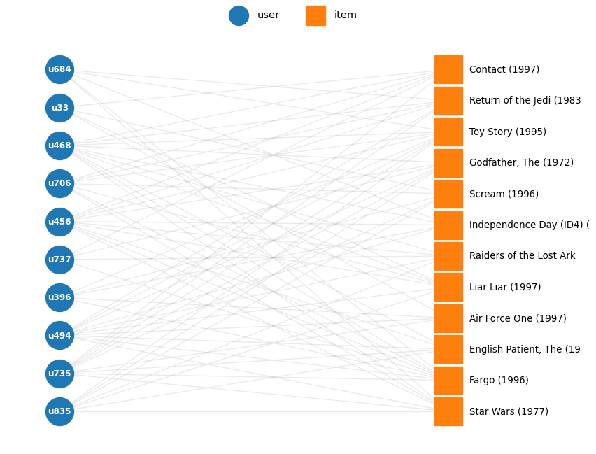

from data.loader import load_movielens_100k, load_movies, load_users
ratings = load_movielens_100k()
type(ratings), ratings.shape(pandas.DataFrame, (100000, 5))A dataset does not have only one useful representation.
In this lab, we examine how the same underlying data can be represented as records, sequences, matrices, vectors, and graphs.
Before choosing an algorithm, choose a representation.
We use MovieLens 100K to examine how the same set of user-item interactions changes when we represent it differently.
An interaction dataset records which users engaged with which items. It is observed only for events that actually happened, so the absence of an entry is ambiguous: it may mean dislike, or simply not yet seen.
load_movielens_100k() looks for u.data, u.item, and u.user under the repository data/interaction/ folder (Movielens/ and ml-100k/ are both accepted). If the files are missing, it downloads them with kagglehub from MovieLens 100K on Kaggle into data/interaction/Movielens/. Internet access is required the first time; after that the local files are reused.
Redistribution notice: MovieLens 100K may not be redistributed without separate permission from GroupLens. Distribute the lab files without the dataset.
The functions in lab01_interaction.py construct the representations and draw the figures. We call them below and examine how each representation changes what we can see in the data.
from data.loader import load_movielens_100k, load_movies, load_users
ratings = load_movielens_100k()
type(ratings), ratings.shape(pandas.DataFrame, (100000, 5))ratings.head()| user_id | item_id | rating | timestamp | datetime | |
|---|---|---|---|---|---|
| 0 | 196 | 242 | 3 | 881250949 | 1997-12-04 15:55:49 |
| 1 | 186 | 302 | 3 | 891717742 | 1998-04-04 19:22:22 |
| 2 | 22 | 377 | 1 | 878887116 | 1997-11-07 07:18:36 |
| 3 | 244 | 51 | 2 | 880606923 | 1997-11-27 05:02:03 |
| 4 | 166 | 346 | 1 | 886397596 | 1998-02-02 05:33:16 |
Each row is one interaction: a (user, item) pair with a rating attached. The (user_id, item_id, rating) fields form a triple; this log also records a timestamp, and the loader adds its readable datetime version.
movies = load_movies()
titles = movies.set_index("item_id")["title"]
movies.head()| item_id | title | release_date | genres | |
|---|---|---|---|---|
| 0 | 1 | Toy Story (1995) | 01-Jan-1995 | [Animation, Children's, Comedy] |
| 1 | 2 | GoldenEye (1995) | 01-Jan-1995 | [Action, Adventure, Thriller] |
| 2 | 3 | Four Rooms (1995) | 01-Jan-1995 | [Thriller] |
| 3 | 4 | Get Shorty (1995) | 01-Jan-1995 | [Action, Comedy, Drama] |
| 4 | 5 | Copycat (1995) | 01-Jan-1995 | [Crime, Drama, Thriller] |
users = load_users()
users.head()| user_id | age | gender | occupation | zip_code | |
|---|---|---|---|---|---|
| 0 | 1 | 24 | M | technician | 85711 |
| 1 | 2 | 53 | F | other | 94043 |
| 2 | 3 | 23 | M | writer | 32067 |
| 3 | 4 | 24 | M | technician | 43537 |
| 4 | 5 | 33 | F | other | 15213 |
pd.DataFrame(
{
"n_interactions": [len(ratings)],
"n_users": [ratings["user_id"].nunique()],
"n_items": [ratings["item_id"].nunique()],
"rating_values": [sorted(ratings["rating"].unique())],
}
)| n_interactions | n_users | n_items | rating_values | |
|---|---|---|---|---|
| 0 | 100000 | 943 | 1682 | [1, 2, 3, 4, 5] |
ratings["rating"].value_counts().sort_index()rating
1 6110
2 11370
3 27145
4 34174
5 21201
Name: count, dtype: int64What is one object in this dataset? Not a user, and not a movie. One row is one interaction — a pair of two different kinds of object. This is why interaction data does not fit the “one row = one object” assumption of record data.
We pivot the triples into a numeric matrix whose rows are users and columns are items. Each cell contains the rating for that pair. User and item IDs label the axes; their numerical sizes are not features or measures of similarity.
Method: long table → numeric matrix.
user_id as the row index and item_id as the column index.rating into the matching cell.build_utility_table() uses DataFrame.pivot() to reshape the log without aggregating rows. It requires one value per user-item pair. First check that the full log satisfies that requirement:
ratings.duplicated(subset=["user_id", "item_id"]).sum()np.int64(0)If repeated ratings existed, we would first need to choose how to handle them, for example keeping the latest rating. This lab uses the original unique pairs.
Let us first take a small block that we can print in full. The helper selects 12 popular movies and up to 10 users who rated at least 3, but fewer than all 12, of those movies. RANDOM_STATE = 42 keeps the sample reproducible; this block is for display, while the full matrix uses every rating.
small = sample_interactions(
ratings,
n_items=12,
n_users=10,
random_state=RANDOM_STATE,
)
utility_table = build_utility_table(small)
utility_table| item_id | 1 | 50 | 100 | 121 | 127 | 174 | 181 | 258 | 286 | 288 | 294 | 300 |
|---|---|---|---|---|---|---|---|---|---|---|---|---|
| user_id | ||||||||||||
| 33 | NaN | NaN | NaN | NaN | NaN | NaN | NaN | 4.0 | NaN | 4.0 | 3.0 | 4.0 |
| 396 | 4.0 | NaN | 2.0 | 5.0 | NaN | NaN | NaN | NaN | NaN | 3.0 | NaN | 3.0 |
| 456 | 2.0 | 4.0 | 3.0 | 2.0 | 5.0 | 4.0 | 3.0 | 4.0 | 3.0 | NaN | 1.0 | NaN |
| 468 | 5.0 | 5.0 | 5.0 | 4.0 | 4.0 | 5.0 | 3.0 | 4.0 | 4.0 | NaN | 3.0 | NaN |
| 494 | 3.0 | 5.0 | 5.0 | 4.0 | 5.0 | 5.0 | 4.0 | NaN | 4.0 | NaN | 4.0 | 5.0 |
| 684 | 4.0 | 4.0 | 4.0 | 3.0 | NaN | NaN | 4.0 | NaN | NaN | NaN | NaN | NaN |
| 706 | 4.0 | 5.0 | 1.0 | NaN | NaN | NaN | 4.0 | 4.0 | NaN | 3.0 | 4.0 | NaN |
| 735 | 4.0 | 5.0 | 2.0 | NaN | 4.0 | NaN | 4.0 | 4.0 | 5.0 | 4.0 | NaN | 4.0 |
| 737 | NaN | NaN | 5.0 | NaN | 5.0 | 2.0 | NaN | 5.0 | NaN | NaN | NaN | NaN |
| 835 | 3.0 | 4.0 | NaN | NaN | 4.0 | 5.0 | NaN | NaN | 3.0 | 2.0 | 3.0 | NaN |
Every NaN is a user-item pair without an observed rating in the log. For the full data, use a CSR sparse matrix (Compressed Sparse Row), which stores values and their positions instead of a dense array of all pairs. Unstored entries read as zero, so we reserve zero for missing ratings here.
Essential function: build_utility_matrix(). The sorted ID arrays define the row and column order. pd.Series maps each original ID to a zero-based position; .loc looks up those positions for every interaction. .to_numpy() extracts the numeric arrays. sparse.csr_matrix((values, (rows, cols)), shape=...) then places each rating at its mapped coordinates. Keep user_ids and item_ids with the matrix so that positions can be mapped back to people and movies.
For the small sample, check that the pivot and sparse construction agree:
X_small, small_users, small_items = build_utility_matrix(small)
np.array_equal(
utility_table.reindex(index=small_users, columns=small_items)
.fillna(0).to_numpy(),
X_small.toarray(),
)True.fillna(0) is used only to compare the two storage conventions; it does not turn an unknown rating into a real rating of zero. .toarray() makes a dense array, so we use it only for the small display block.
pd.DataFrame(
X_small.toarray(),
index=[f"u{u}" for u in small_users],
columns=[titles[i][:16] for i in small_items],
).replace(0.0, np.nan)| Toy Story (1995) | Star Wars (1977) | Fargo (1996) | Independence Day | Godfather, The ( | Raiders of the L | Return of the Je | Contact (1997) | English Patient, | Scream (1996) | Liar Liar (1997) | Air Force One (1 | |
|---|---|---|---|---|---|---|---|---|---|---|---|---|
| u33 | NaN | NaN | NaN | NaN | NaN | NaN | NaN | 4.0 | NaN | 4.0 | 3.0 | 4.0 |
| u396 | 4.0 | NaN | 2.0 | 5.0 | NaN | NaN | NaN | NaN | NaN | 3.0 | NaN | 3.0 |
| u456 | 2.0 | 4.0 | 3.0 | 2.0 | 5.0 | 4.0 | 3.0 | 4.0 | 3.0 | NaN | 1.0 | NaN |
| u468 | 5.0 | 5.0 | 5.0 | 4.0 | 4.0 | 5.0 | 3.0 | 4.0 | 4.0 | NaN | 3.0 | NaN |
| u494 | 3.0 | 5.0 | 5.0 | 4.0 | 5.0 | 5.0 | 4.0 | NaN | 4.0 | NaN | 4.0 | 5.0 |
| u684 | 4.0 | 4.0 | 4.0 | 3.0 | NaN | NaN | 4.0 | NaN | NaN | NaN | NaN | NaN |
| u706 | 4.0 | 5.0 | 1.0 | NaN | NaN | NaN | 4.0 | 4.0 | NaN | 3.0 | 4.0 | NaN |
| u735 | 4.0 | 5.0 | 2.0 | NaN | 4.0 | NaN | 4.0 | 4.0 | 5.0 | 4.0 | NaN | 4.0 |
| u737 | NaN | NaN | 5.0 | NaN | 5.0 | 2.0 | NaN | 5.0 | NaN | NaN | NaN | NaN |
| u835 | 3.0 | 4.0 | NaN | NaN | 4.0 | 5.0 | NaN | NaN | 3.0 | 2.0 | 3.0 | NaN |
Now build the full matrix:
X, user_ids, item_ids = build_utility_matrix(ratings)
type(X), X.shape, X.nnz(scipy.sparse._csr.csr_matrix, (943, 1682), 100000)X.shape gives the number of rows and columns. X.nnz counts stored entries; since all observed ratings are positive, it equals the number of observed pairs. Density is the fraction of matrix cells containing stored nonzero values:
f"density = {matrix_density(X):.4%}"'density = 6.3047%'The matrix has the following meaning:
Why is this matrix sparse? Each user rates only a small subset of the 1,682 movies. Only 6.3% of the user-item pairs are observed, so more than 93% of the matrix is missing.
Did we lose anything by pivoting? Yes. The timestamp of each interaction is no longer visible in the matrix. The same triples could instead be represented as a sequence ordered by time.
Often we only know that an interaction happened, not how much the user liked the item. Here we start with explicit ratings and derive a binary positive interaction view using a threshold of 4:
1: the observed rating is 4 or 5.0: the rating is below 4, or no rating was observed.Essential function: binarize_utility_matrix(). .data contains the stored ratings, so the comparison is applied only to observed entries. .astype(float) converts the comparison results into numeric 0/1 values. .eliminate_zeros() removes stored zeros to keep the result sparse. copy=True preserves X.
This is not an “any rating occurred” matrix: ratings 1–3 also become zero. The rating scale and the distinction between a low rating and a missing rating are lost.
X_binary = binarize_utility_matrix(X, threshold=4.0)
X_binary.shape, X_binary.nnz((943, 1682), 55375)f"density = {matrix_density(X_binary):.4%}"'density = 3.4912%'pd.DataFrame(
{
"representation": ["rating (1-5)", "binary (>= 4)"],
"stored_nonzero_entries": [X.nnz, X_binary.nnz],
"density": [matrix_density(X), matrix_density(X_binary)],
}
)| representation | stored_nonzero_entries | density | |
|---|---|---|---|
| 0 | rating (1-5) | 100000 | 0.063047 |
| 1 | binary (>= 4) | 55375 | 0.034912 |
In the binary matrix, is a 0 the same as a low rating? No. A 0 means “no positive interaction under our threshold”: it combines observed ratings below 4 with unobserved pairs. We cannot infer from a missing rating whether the movie was unseen, disliked, or seen but not rated. A 1 means that an observed rating met our chosen threshold.
The same interactions can be viewed as a graph with two kinds of node — users and items — where an edge exists whenever a user rated an item. Here we use small, including ratings below 4; the graph corresponds to X_small, rather than to the thresholded positive-interaction matrix.
Essential function: build_bipartite_graph(). nx.Graph() creates an undirected graph. add_node() records the two node types with bipartite=0/1; add_edge(..., weight=rating) stores the rating on each user-item edge. Prefixes such as u50 and i50 distinguish users from movies even when their numeric IDs match. The bipartite property comes from connecting only opposite node types, not from the attributes alone.
G = build_bipartite_graph(
small,
titles=titles,
)
type(G), G.number_of_nodes(), G.number_of_edges()(networkx.classes.graph.Graph, 22, 71)nx.is_bipartite(G)Truelist(G.edges(data=True))[:5][('u33', 'i258', {'weight': 4.0}),
('u33', 'i288', {'weight': 4.0}),
('u33', 'i294', {'weight': 3.0}),
('u33', 'i300', {'weight': 4.0}),
('u396', 'i1', {'weight': 4.0})]plot_bipartite_graph(G)
plt.show()
The graph and the matrix are two views of the same object. The users x items block of the adjacency matrix is called the biadjacency matrix. The full adjacency matrix would include all user and item nodes on both axes; this block has only users on rows and items on columns.
Essential function: build_biadjacency_matrix(). The helper uses nx.bipartite.biadjacency_matrix() with weight="weight" to recover ratings. Passing small_users and small_items matches both axis orders to X_small. With weight=None, the NetworkX method would return edge-presence values instead.
B, row_nodes, col_nodes = build_biadjacency_matrix(
G, small_users, small_items,
)
B.shape, B.nnz((10, 12), 71)B.nnz == G.number_of_edges(), (B != X_small).nnz == 0(True, True)pd.DataFrame(
B.toarray(),
index=row_nodes,
columns=[c[:10] for c in col_nodes],
).replace(0.0, np.nan)| i1 | i50 | i100 | i121 | i127 | i174 | i181 | i258 | i286 | i288 | i294 | i300 | |
|---|---|---|---|---|---|---|---|---|---|---|---|---|
| u33 | NaN | NaN | NaN | NaN | NaN | NaN | NaN | 4.0 | NaN | 4.0 | 3.0 | 4.0 |
| u396 | 4.0 | NaN | 2.0 | 5.0 | NaN | NaN | NaN | NaN | NaN | 3.0 | NaN | 3.0 |
| u456 | 2.0 | 4.0 | 3.0 | 2.0 | 5.0 | 4.0 | 3.0 | 4.0 | 3.0 | NaN | 1.0 | NaN |
| u468 | 5.0 | 5.0 | 5.0 | 4.0 | 4.0 | 5.0 | 3.0 | 4.0 | 4.0 | NaN | 3.0 | NaN |
| u494 | 3.0 | 5.0 | 5.0 | 4.0 | 5.0 | 5.0 | 4.0 | NaN | 4.0 | NaN | 4.0 | 5.0 |
| u684 | 4.0 | 4.0 | 4.0 | 3.0 | NaN | NaN | 4.0 | NaN | NaN | NaN | NaN | NaN |
| u706 | 4.0 | 5.0 | 1.0 | NaN | NaN | NaN | 4.0 | 4.0 | NaN | 3.0 | 4.0 | NaN |
| u735 | 4.0 | 5.0 | 2.0 | NaN | 4.0 | NaN | 4.0 | 4.0 | 5.0 | 4.0 | NaN | 4.0 |
| u737 | NaN | NaN | 5.0 | NaN | 5.0 | 2.0 | NaN | 5.0 | NaN | NaN | NaN | NaN |
| u835 | 3.0 | 4.0 | NaN | NaN | 4.0 | 5.0 | NaN | NaN | 3.0 | 2.0 | 3.0 | NaN |
Is the bipartite graph a different dataset from the utility matrix? No. The biadjacency matrix of the graph is the utility matrix, up to the ordering of rows and columns. Choosing “graph” or “matrix” changes which tools we can apply, not what the data contains.
What information does this particular graph leave out? Our construction stores the rating and omits the timestamp. A graph could store timestamps or tags as edge attributes, but a simple nx.Graph keeps only one edge per user-item pair. Repeated events would need an explicit representation, such as an event log or a multigraph. A separate tag node type is useful if tags also need to participate in graph relationships.
We can fold the bipartite graph onto one side: connect two users when they rated the same item, weighted by how many items they share. Here we keep only pairs that share at least four items, so that the strongest links stand out.
Essential function: project_onto_users(). nx.bipartite.weighted_projected_graph() counts common item neighbors for each user pair. It does not compare or multiply the original rating weights: two users can rate the same movie differently and still contribute one shared item. We then remove edges whose counts are below min_shared=4; users with no remaining edges are retained as isolated nodes.
P = project_onto_users(G, min_shared=4)
P.number_of_nodes(), P.number_of_edges()(10, 24)sorted(
P.edges(data=True),
key=lambda e: e[2]["weight"],
reverse=True,
)[:5][('u456', 'u468', {'weight': 10}),
('u456', 'u494', {'weight': 9}),
('u468', 'u494', {'weight': 9}),
('u456', 'u735', {'weight': 7}),
('u468', 'u735', {'weight': 7})]plot_user_projection(P)
plt.show()
What was lost in the projection? The item identities and rating values. We can see how many movies two users both rated, but the graph no longer tells us which movies they shared or whether their preferences agreed. Projection also destroys the bipartite structure: this graph has only one kind of node.
Instead of folding by counting shared users, we can compare item columns of the binary matrix with cosine similarity.
Method: compare item vectors. Each column of X_binary records which users rated that item at least 4. Transposing with .T makes each item a row because cosine_similarity() compares row vectors. For two nonzero item vectors \(x_i\) and \(x_j\),
\[ \operatorname{cosine}(i,j) = \frac{x_i^\top x_j}{\lVert x_i\rVert_2\lVert x_j\rVert_2}. \]
For binary vectors, the numerator counts users who rated both movies at least 4; the denominator is the square root of the product of their positive-rating counts. This differs from the raw shared-item count in the user projection. scikit-learn returns zero similarity for a zero vector, which carries no positive-rating evidence.
Essential function: compute_item_similarity(). .tocsr() prepares the transposed matrix for row selection. Selecting one query row avoids constructing the full item-by-item similarity matrix; .ravel() returns a one-dimensional score array in the same order as item_ids.
query_item = 50
query_index = int(np.where(item_ids == query_item)[0][0])
titles[query_item]'Star Wars (1977)'scores = compute_item_similarity(X_binary, query_index=query_index)
scores.shape(1682,)scores[query_index] = -1
top_idx = scores.argsort()[-8:][::-1]
pd.DataFrame(
{
"title": [titles[item_ids[i]] for i in top_idx],
"cosine_similarity": scores[top_idx].round(3),
}
)| title | cosine_similarity | |
|---|---|---|
| 0 | Return of the Jedi (1983) | 0.801 |
| 1 | Empire Strikes Back, The (1980) | 0.715 |
| 2 | Raiders of the Lost Ark (1981) | 0.702 |
| 3 | Godfather, The (1972) | 0.634 |
| 4 | Silence of the Lambs, The (1991) | 0.617 |
| 5 | Toy Story (1995) | 0.616 |
| 6 | Indiana Jones and the Last Crusade (1989) | 0.595 |
| 7 | Princess Bride, The (1987) | 0.593 |
We connect each item to its k most similar items, restricted to the 25 movies with the most positive ratings in X_binary. Popularity is measured after binarization.
Essential function: build_item_knn_graph(). NearestNeighbors(metric="cosine") finds nearby item vectors; similarity is 1 - distance. Requesting k + 1 candidates allows us to remove the item itself explicitly, then keep up to k other items. The search below is within the selected 25 movies and uses all users’ positive ratings as features.
This is an undirected graph: an edge is included when either endpoint selects the other. A node can therefore have more than k neighbors. We use k=2 and max_items=25:
G_items = build_item_knn_graph(
X_binary,
item_ids=item_ids,
titles=titles,
k=2,
max_items=25,
)
G_items.number_of_nodes(), G_items.number_of_edges()(25, 41)plot_item_similarity_graph(G_items)
plt.show()
Were these edges present in the original MovieLens data? No. MovieLens contains only user-item ratings. The item-item edges are derived: we chose a binary representation, cosine similarity, and a k-nearest-neighbor rule. A different threshold or metric would produce a different graph.